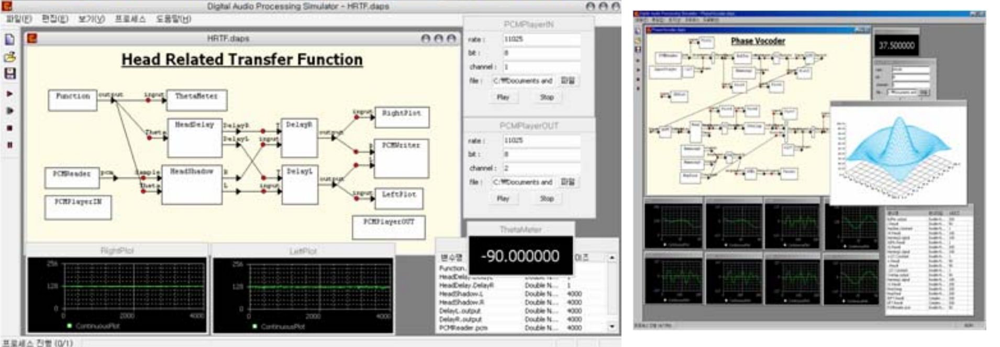

Career Summary
Expertise in Mobile dev (Android, iOS), Web app, and Desktop application. Recently, worked on Whirlpool Italy projects, delivering mobile app to support their workflow. Skilled in software development, architecture, customer management and project management. Status: * Residence in Italy * Family Member of a European Union Citizen * Nationality South Korean Recent technologies used: * Backend (C#, nodejs, php) * Frontend (Angular, React, Vue) * Mobile App (Xamarin, Java, Cordova) * Build Process (Web server package, Mobile package, Cordova, CodePush) Latest roles and responsibilities are: * Project estimation, initiation. Communicate cost related information from the technical perspective. Ensure the delivery of the software through monitoring the progress and status of the dev team. * Software architecturing. Provide declarative structure. Provide top-down view of the software so that development can be modular by design. * Key user communication. Capture key users requirement from the client perspective and put best effort to provide most cost efficient ways to benefit both the client and the dev team. My lastest work get be discovered in github repository: https://github.com/unkyulee/WebApplication
Work Experience
Senior Software Architect
-
Whirlpool enginner appointment management mobile application on Xamarin
2018.01 ~ 2018.05
Whirlpool Italia has engineers visiting customers to repair appliances. The software is for the engineers to manage their appointments, and perform workflows on the mobile device. Challenges was to make it work offline as the network coverage may not be available at the customers house, yet the workflow must be seemlessely performed. Project took around 5 months to complete. Development duration was around 3 month. My role on this project was software architecturing, development.
- Propose project to the client and the management in order to initiate the project
- Continuous communication with the key user in order to report progress and collect feedback
- Assist project management by providing cost related measures throuout of the project
- Produced a software architecture that ensures integration with existing systems and workflows. Went through a review process with internal dev team and also with Whirlpool infrastructure team to ensure the feasibility
- Developed a Xamarin mobile software, and implemented replication features to enable offline functionality
- Developed a C# netcore backend software providing authentication and replication
-
Appointment Booking for the end-users and integration with the schedule management backoffice
2019.01 ~ 2019.09
- Communicate with the business in order to collect requirements
- Communicate with the dev team and project management in order to identify an feasible requirement
- Estimate project cost in terms of development
- Produced a software architecture that covers the requirement.
- Developed a cordova/angular mobile application
- Developed a nodejs backend providing configurable REST services. Designed to eliminate the maintenance cost
- Provide test support with QA
- Release both iOS and Android app
Technologies used:
- Angular
- Xamarin
- Java
- C#
- ASP.NET
- .netcore
- Node
- SQL
- MongoDB
Software Engineer
-
Control System for Vaccuum Chamber in COMPASS Machine
2019.01 ~ 2019.09
- Communicate with research team in order to collect requirements
- Communicate with operation team in order to ensure feasibility of the project
- Proposed a project plan to the management
- Coordinated the progress and status of the project with interested parties
- Participate to develop a electron/react desktop application
- Participate to develop a backend integrating with the vaccuum control boards
- Planned a release to minimize the operation interruption.
-
Project Scheduling Portal
2019.01 ~ 2019.09
- Communicate with research team in order to collect requirements
- Communicate with operation team in order to ensure feasibility of the project
- Proposed a project plan to the management
- Coordinated the progress and status of the project with interested parties
- Participate to develop a python/bootstrap web application
- Planned a release to minimize the operation interruption.
Technologies used:
- React
- Electron
- Python
- Elasticsearch
- MySQL
Software Engineer
-
Document search engine using Elasticsearch
2015 ~ 2016
ITER organization had large database of documents registered on their management system. However, due to SQL limitation and the quantity (10 million records) it was very difficult to search the contents of the document and return relevant results. Using elasticsearch, was possible to deliver incredibly fast responding search engine. This project was carried on as a one person project. Lesson learned from the project is that development task is only a tip of an iceberg. Politics and communications plays a major role in successful delivery of the project.
- Initiate project using PRINCE2 methodology
- Identify interested parties and also carefully collect potential conflict of interest among the parties
- Risk analysis on the delivery of the project. Organization was quite resistent to changes. Establishing communication strategy was the key to mitigate and minimize the risk in this project. As 1,000 on-site staff and 8 off-shore organization would not be disturbed in their operation.
- Proposed a project plan to the resource management
- Coordinated the progress and status of the project with interested parties
- Developed a elasticsearch web application
- Planned a release to minimize the resistent to changes.
-
Software Development Process
2014
One of the difficulties of working as a software developer in a non-software company is that, a proper process doesn't exists. Most of the work is based on frequent change requests such as tickets. Work becomes very un-organized quickly. Establishing a higher level stucture was necessary. Challenges are that often these companies lacks resources or interest to keep up with standard procedures. Often considered complex and useless. It was a long term project to capture the realistic process of the company and map it into an understandable format.
- Initiate project using PRINCE2 methodology
- Extract and adapt ISO standard into fitting model of the current organization workflows
- Continuous training the dev team and interested parties over 3 years to settle on the standardization
Technologies used:
- ASP.NET
- SQL
- SSIS
- ORACLE
- JAVA
Software Engineer
Development, Maintenance, and Deployment of Anti-virus software.
Technologies used:
- Visual C++
- MFC
Junior Software Engineer
-
Digital Audio Processing Simualtor
2004
Very first personal project of mine that got award from many organizations and contests. Developed when I was a student. I had great interest in signal processing. There were not so many audio processing simulators existed at the time and I decided to create on by myself. Benefit was that the calculation modules were configurable and the presentation of the simulation was very intriguing. It is out-dated project but I will always have this project in my portfolio as to remember my passion to enter software domain

Technologies used:
- Visual C++
- Windows Programming
Education
-
BSc Electronical EngineeringKorea University, Seoul, Korea2001 - 2006
Language
- English (Native)
- Italian (Professional)
- French (Professional)
- Korean (Native)